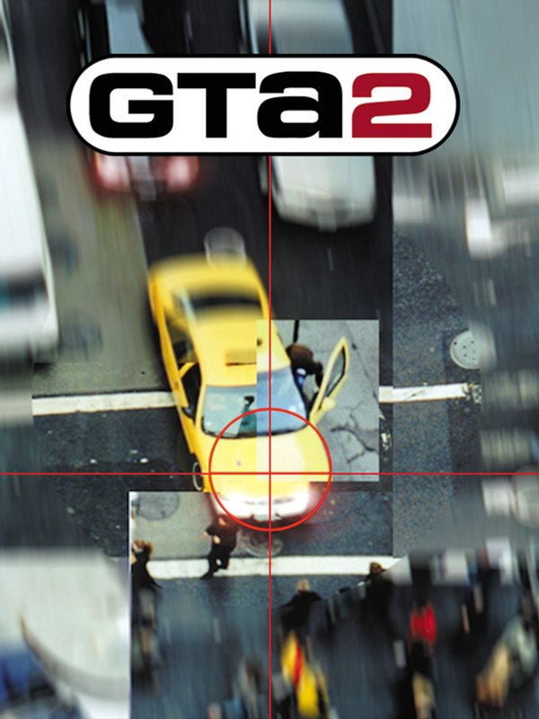

How to enter
Enter GOURANGA as your player name first, then edit the name to the code. Some codes only work on the US or European release.
Player-name codes change that save, so use a separate name for cheating.

Enter GOURANGA as your player name first, then edit the name to the code. Some codes only work on the US or European release.
Player-name codes change that save, so use a separate name for cheating.
Codes last checked against sources on .
Wrong or missing code? Use Report on the cheat, open an issue or send a pull request on GitHub. Each game is one JSON file.